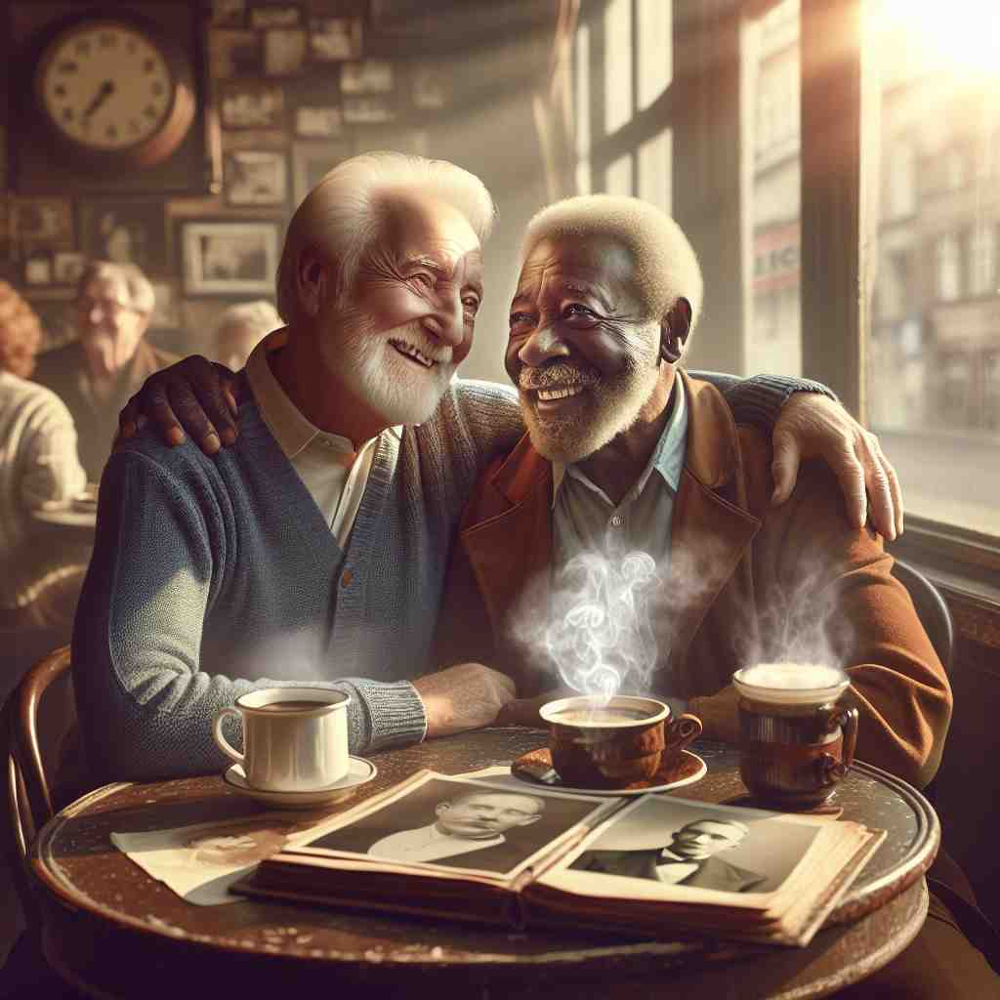

🗝️ n. an event where people come together for a specific purpose
🖼️ 在公司一个明亮的会议室里，各部门负责人围坐在长桌旁。白板上写满了计划和目标，大家正热烈地讨论如何提高下季度的销售业绩。这个场景呈现的就是一种典型的'meeting'，目的是为了解决具体问题。
🔍 想象人们在一个地点聚集在一起，这就是'meeting'的核心含义。无论是有目的的集会、偶然的相遇，还是事物的交汇，都可以用这个画面来联想。这个核心概念贯穿了'meeting'的各种用法，有助于你更好地理解和记忆它的多重含义。

💬 The teacher started the class meeting to discuss the upcoming project.

💬 The team is having a weekly meeting to discuss their progress.

💬 The two friends are enjoying a social meeting over coffee.
💬 The team is having a business meeting to discuss their project.
🔗 1. meet: 遇见 2. meetinghouse: 礼拜堂 3. meetup: 聚会
💡 可以将 "meeting" 联想为 "meet"（会面）加上 "-ing"，即一种正在进行的或计划中的会面活动。通过将动词和这种活动概念联系，更容易记住它作为名词的意义。
🗝️ n. a gathering of people for religious worship
🖼️ 在一个古老的教堂里，信徒们整齐地坐在长椅上，阳光透过彩色玻璃窗洒在他们身上。牧师站在前面，带领大家祈祷和歌唱，营造出一种庄重而神圣的氛围。这就是'meeting'作为宗教崇拜聚会的场景。
💬 The Quakers held their weekly meeting at the local hall.
❓ 特定目的的聚集，这里是宗教崇拜
🗝️ n. an assembly of people, especially the members of a society or committee
🖼️ 在一本图书馆的活动室里，文学社团的成员们正在进行月度例会。大家在讨论下个月的读书活动计划，桌上散放着各类书籍和笔记本。这体现了'meeting'作为社团或委员会集会的含义。
💬 The annual meeting of the shareholders will be held next month.
❓ 特定群体的聚集，如社团或委员会成员
🗝️ n. a coming together of two or more people, by chance or arrangement
🖼️ 在城市的一家咖啡馆里，两个大学同学多年未见，偶然相遇。他们惊喜地相视一笑，决定一起喝杯咖啡，回忆过去的大学时光。这是'meeting'作为偶然或有意的相聚的生动例子。
💬 Their chance meeting at the airport led to a lifelong friendship.
❓ 两个或多个人的偶然或安排的相遇
🗝️ n. a place where paths, roads, or railways join
🖼️ 在一个繁忙的十字路口，红绿灯下车辆鱼贯而行，行人纷纷过马路。在这里，几条主要道路交汇，形成城市交通的关键节点，这就是'meeting'作为道路汇合处的场景。
💬 The accident occurred at the meeting of two busy highways.
❓ 路径、道路或铁路的交汇点，象征性地"相遇"
🗝️ n. the action of coming into contact or coming together
🖼️ 在一个大型会议中心，各种来自不同国家的参展商互相交换名片，分享各自的产品和理念。不同文化和背景的人们在此相遇、交流展示了'meeting'作为交流接触行为的含义。
💬 The meeting of warm and cold air masses often results in storms.
❓ 事物的接触或汇合，延伸自人的相遇